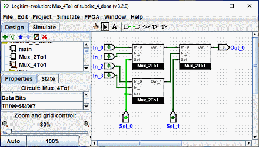

שימוש במעגלי משנה
כעת נניח שאנו רוצים לבנות מרבבי 4 ל-1 באמצעות מופעים של מרבבי 2 ל-1 שלנו. כמובן, היינו עושים זאת תחילה צור מעגל חדש, שאליו נקרא Mux_4to1 כדי להוסיף מרבבי 2 ל-1 למרבבים שלנו מעגל, אנו לוחצים על המעגל Mux_2to1 פעם אחת בחלונית הסייר כדי לבחור אותו כ כלי, ואז נוכל להוסיף עותקים שלו, המיוצגים כתיבות, על ידי לחיצה בתוך הקנבס.
אם היית לוחץ פעמיים על המעגל Mux_2to1 בחלונית הסייר, החלון היה עבור לעריכת מעגל Mux_2to1 במקום זאת.
לאחר בניית המעגל, אנו מסיימים עם הדברים הבאים.

המעגל שלנו למרבב 4 ל-1 משתמש בשלושה עותקים של מרבבי 2 ל-1, כל אחד מצוייר בקופסה עם סיכות בצד שמאל וימין. הפינים בתיבה זו תואמים לפיני הקלט והפלט ב-Mux_2to1. שני הפינים בצד המזרחי של התיבה תואמים לכניסות של המעגל ובצד המערבי הם תואמים את הפלט. הם נקראים מהדיאגרמה של תת-המעגל מימין לשמאל ומלמעלה למטה והם ימוקמו על סמל מעגל המשנה מלמעלה למטה.
אם תוויות קושרו לסיכות אלו בתרשים הן ייכללו בסמל. בנוסף, הם מוצגים גם כטיפ כאשר אתה עף על הסיכה עם העכבר. אתה יכול להשבית את זה תכונה דרך חלונית ההעדפות.)

מספר רכיבים אחרים יציגו גם טיפים אלה: עבור חלק מהסיכות של כפכף, למשל, ריחוף מעליו מסביר מה הסיכה הזו עושה.
אגב, כל פין למעגל חייב להיות קלט או פלט. להרבה שבבים מיוצרים יש סיכות שמתנהגים כקלט במצבים מסוימים וכפלט באחרים; אתה לא יכול לבנות שבבים כאלה בפנים Logisim (לפחות, בגרסה הנוכחית.
Logisim תשמור על מידע מצב שונה עבור כל תת-המעגלים המופיעים במעגל. לדוגמה, אם א המעגל מכיל כפכף, והמעגל הזה משמש כתת-מעגל מספר פעמים, ואז כל תת-מעגל לכפכף יהיה ערך משלו בעת הדמיית המעגל הגדול יותר.
כעת, לאחר שהגדרנו את המרבב 4 ל-1, אנו יכולים כעת להשתמש בו במעגלים אחרים. ללוגיסים אין מגבלות על כמה עמוק ניתן לקנן מעגלים - למרות שזה יתנגד לקינון מעגלים בתוך עצמם!
הערה: אין שום דבר רע בעריכת מעגל המשמש כתת-מעגל; ב למעשה, זה די נפוץ. עם זאת, שים לב שכל שינוי בפינים של המעגל (הוספה, מחיקה או הזזה אותם) יסדר אותם מחדש גם במעגל המכיל. לפיכך, אם תשנה פינים כלשהם במעגל, תעשה זאת צריך גם לערוך מעגלים המשתמשים בו כתת-מעגל.
הבא: עריכת הופעת מעגל המשנה.